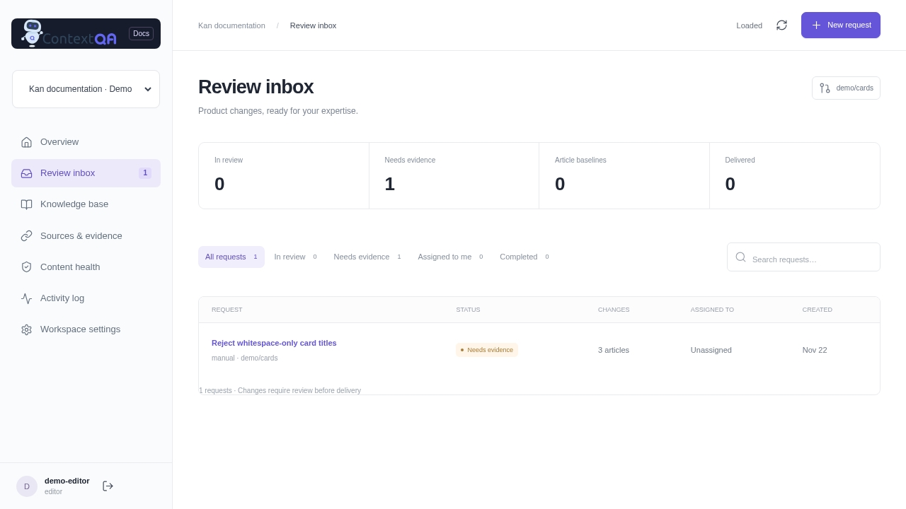

Find a documentation request
Use this guide as an editor in the sample Kan workspace.
- Open Workspace overview.
- Under Requests needing attention, select Reject whitespace-only card titles.
- Read the outstanding evidence request before reviewing the proposed article.
 Workspace overview from Ship 5 case 199, result 460. Open the image to see its original 800 × 450 trace frame.
Workspace overview from Ship 5 case 199, result 460. Open the image to see its original 800 × 450 trace frame.Find the request in the review inbox
You can also open Review inbox from the sidebar. Find Reject whitespace-only card titles under Request.

Open the original review inbox screenshot (1280 × 720). Captured by Ship 5 in case 199, result 460.Watch the sample review walkthrough (MP4)